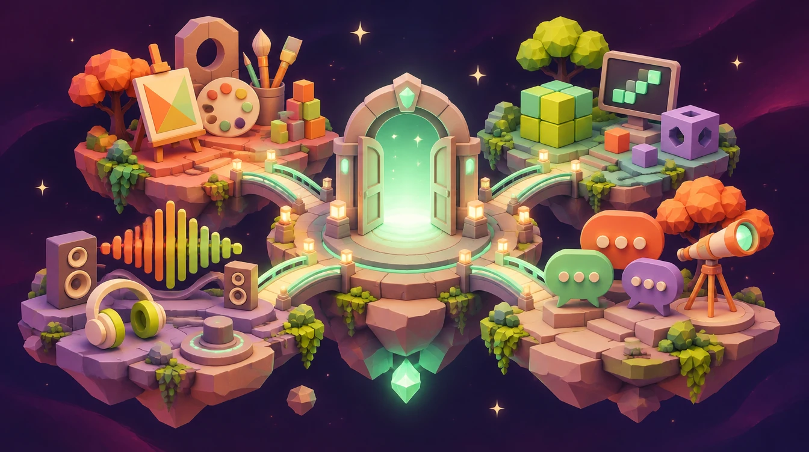
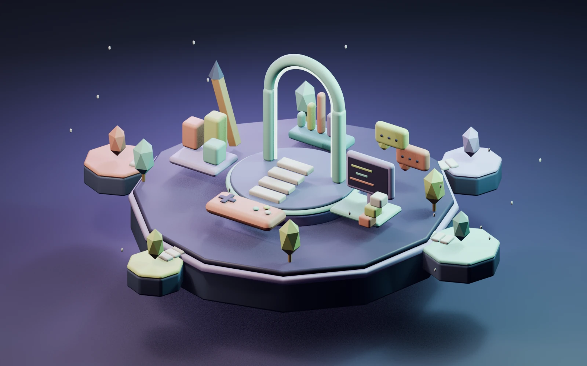
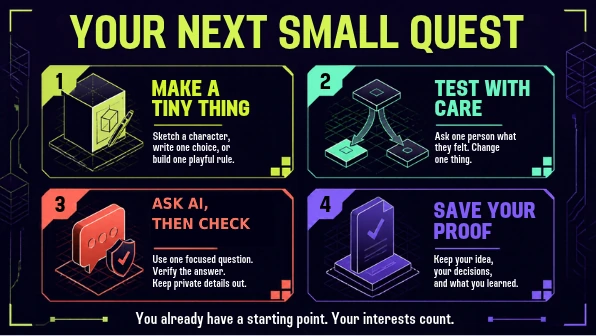

Ask better questions
State the task, constraints and what a good result looks like before opening a tool.
Press play. Make one small choice.
Watch it change the experience.
There’s room for the way you see things.

A tiny creative adventure.
No experience needed.
No timer. No score. No account needed.
No fixed order. No leaderboard.
Every chapter gives you something to take away.

ORIGINAL WORLD, BUILT IN BLENDERArt, logic, sound and community connect here. Pick a creative station for a tiny no-tech challenge. There’s no wrong place to start.
Got Blender or another 3D tool? Grab the island model (1.1 MB). Optional: this activity works without it.
Pick up to three interests. We’ll suggest places to explore, not decide who you are. You can change your mind anytime.
These are starting points, not an aptitude test. Every role is open to explore.
Development means making the game. Monetization is how it is funded. Distribution helps it reach players. Player sentiment is listening to their reactions.
Role names vary by studio. “Future-facing” describes evolving work and transferable skills, not a prediction or job guarantee.
Your fictional team is making Common Ground, a cozy game about turning an empty lot into a neighborhood garden. You get to help shape it.
Being AI-literate doesn’t mean generating more. It means knowing when AI helps, what to question, and when another tool is enough.
Could paper, a search, a spreadsheet, or your own skills do the job well? “No AI needed” is a smart choice.
Write a clear brief. If you use AI, try a small output first, reuse useful results, and stop when it meets the need.
Verify facts and code. Check representation, consent, copyright and accessibility. A confident output can still be wrong.
AI uses electricity, and its infrastructure also has water, materials and hardware impacts. The footprint depends on the model, task, data center, energy mix and scale. There isn’t one reliable “grams per prompt” number for every tool.
Choose the smallest suitable tool, avoid endless regenerations, and prefer reusable work. Text, image and video tasks are not interchangeable. Don’t assume a local model is always greener, or that an AI choice has zero impact.
These are practical habits, not a carbon calculator. Bigger system choices by providers, businesses and policymakers matter too.
State the task, constraints and what a good result looks like before opening a tool.
Find an independent, reliable source. Keep the link and note what you checked.
Use invented or public practice data. Don’t upload names, private chats, faces or other people’s work without appropriate permission.
Keep a tiny log: tool, purpose, what you changed, what you rejected and why. Disclose AI help when required.
USC Games connects work across the School of Cinematic Arts and the Viterbi School of Engineering. Explore the routes and the questions that help you find a fit.
Programs and applications can change. Use the official links for current requirements, deadlines and costs. USC is one possible route, not the only way into games.
Try a student game or watch a showcase. What is the player trying to do? How does the game teach it? Where does it include or exclude someone?
Visit the official USC Games hub →A paper prototype, a one-room game, a short interactive story or a game-art study can help you test an interest. Keep your first version and your improvements.
Ask how students form teams, what a first-year project looks like, which tools are supported, and how advising and access needs are handled.
Computer Science (Games) belongs to Viterbi. The BFA pathways listed here belong to Cinematic Arts. Their application processes are different. Read the degree page and the application page together.
Official degree overview →First-year, transfer and graduate applicants have different instructions. Confirm the current application cycle, required materials and any portfolio or supplement directly with the relevant school. This guide does not provide deadline or admission guarantees.
Current Viterbi guidance →Look beyond tuition to housing, equipment, travel and supplies. Compare financial aid and net cost, not only a headline price. Ask the university about need-based aid, scholarships, accommodations and support. Do not assume a particular scholarship or admission outcome.
USC Financial Aid →Community college, transfer routes, other schools, apprenticeships where offered, community projects and independent practice can also build skills. A degree is one resource; a clear process, teamwork and evidence of what you can do matter too.
“What could I try next, and who could help me learn from it?” Bring that question to a teacher, counselor, mentor or trusted adult.
You don’t need a perfect career plan. Choose a little experiment, make something, and notice what you learn.
Explore a role and save a mission, or start with this no-tech challenge.
Use your own language, a short phrase or a sketch on paper. These fields stay only in this tab. Leave names and personal details out.
You can ask a trusted adult or Kollab staff what support is available. This activity does not arrange a mentor, placement or follow-up.
Only in this tab, not saved to an account. Download before closing or reloading.
Your choices stay in this page’s memory only. They are not sent to a server. Download before closing or reloading. Use initials or invented examples in your own project files.
A little reminder for the next time you make something. Use the four checkpoints in any order, and skip AI when a simpler tool is enough.
You already have a starting point. Your interests count.

The companion artwork and complete instructions are included here. No Canva account is needed.
One person makes, one person tests, then swap. You both get to be the expert and the learner. That is Kollab energy.
Choose a time box and a device setup. This is a suggested workshop plan, not an official Kollab program or a promise of support.
Open the activity by link, or use the downloadable offline kit. No student account or AI subscription is needed. Check school-device restrictions, downloads and printing before the session. Ask permission before sharing anyone’s work.
Open index.html from the extracted kit in a modern browser. The activities work offline; official source links need internet. Check downloads, printing and school-device restrictions in advance.
Let the learner choose a fictional scene, try both paths, and note what remains uncertain. A partner is an option, not a requirement.
One person suggests a change, another tries it, then swap. Quiet pointing, writing and observing count. Do not collect names or compare scores.
Write one instruction, draw a tiny scene, ask what the player can do, and revise one thing. The printable worksheet works without this website.
Evidence can be a before/after sketch, an instruction, a rule, or a short explanation. Completing clicks is not evidence of job readiness. Ask before showing anyone’s work; opting out of sharing does not reduce participation.
Invite a language, story context or style the learner knows. Offer plain words, a drawing or an optional explanation across languages. Do not ask anyone to represent a whole culture.
Allow passing, breaks, quiet participation and paper alternatives. If a personal safety concern comes up, pause public discussion and follow your organization’s safeguarding and reporting procedures. Do not ask for sensitive details in this activity or promise secrecy.